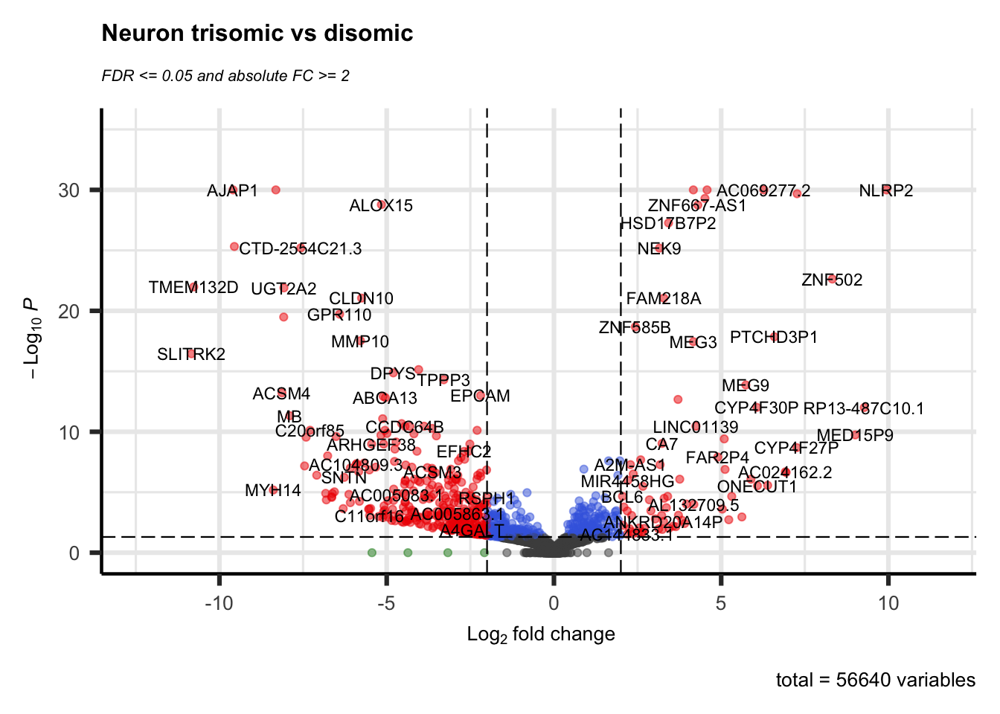

Data Analysis and Visualization
At this point we have one or more sets of DEGs from our experiment. It might be just one set or it might be a large number of comparisons made with a set of DEGs per comparison and/ or results from multiple approaches (manual, packages). This chapter offers some guidance to visualize, summarize and - finally - connect some biological relevance to the results. Browse this chapter first before choosing the visualization(s) to make for your data! If your article contains relevant figures that you would like to try and reproduce (given that enough data is available) that can be done as well instead of the visualizations shown here. Note however that the Volcano plot described below is required.
5.1 Volcano Plot
A volcano plot is often the first visualization of the data once the statistical tests are completed. This plot shows data for all genes and we highlight those genes that are considered DEG by using thresholds for both the (adjusted) p-value and a fold-change. Many articles describe values used for these thresholds in their methods section, otherwise a good default is 0.05 for the adjusted p-value and around 1.0 for the log-FC.
Here we use the EnhancedVolcano library that creates a ggplot2 volcano plot as shown below. This is packaged in a function deseq.volcano just because we create two figures and only need to change the input data set and plot title. The resulting scatterplot places the -log10(pvalue) values on the y-axis and the log-FC on the x-axis. This often results in a plot representing a volcanic ‘eruption’ where the fold-change influences the spread and the significance the height. Coloring is done based on the thresholds (-log10(0.05) for the adjusted and log2(2) for the log-FC) as follows:
- (dark) gray: not significant; both the FC and adjusted p-value is below the thresholds.
- green: high FC, but adjusted p-value is below the threshold.
- blue: adjusted p-value indicates significance, but FC below the threshold
- red: significant DEG
You can adjust the pCutoff and FCcutoff values depending on your own requirements, see the elaborate documentation and examples on GitHub. The code below wraps the EnhancedVolcano function in a custom function (deseq.volcano) that can be used when there are multiple comparisons to make.
library(EnhancedVolcano)
## Simple function for plotting a Volcano plot, returns a ggplot object
deseq.volcano <- function(res, datasetName) {
return(EnhancedVolcano(res, x = 'log2FoldChange', y = 'padj',
lab=rownames(res),
title = paste(datasetName, "trisomic vs disomic"),
subtitle = bquote(italic('FDR <= 0.05 and absolute FC >= 2')),
# Change text and icon sizes
labSize = 3, pointSize = 1.5, axisLabSize=10, titleLabSize=12,
subtitleLabSize=8, captionLabSize=10,
# Disable legend
legendPosition = "none",
# Set cutoffs
pCutoff = 0.05, FCcutoff = 2))
}
## Note: input data is the corrected DESeq2 output using the 'lfcShrink' function (see chapter 4)
deseq.volcano(res = res.ipsc.lfc, datasetName = "IPSC")

## Note that the most simplest case is:
EnhancedVolcano(res.ipsc, x = 'log2FoldChange', y = 'padj', lab = rownames(res.ipsc))Notes:
- When you have used edgeR instead you need to change the names of the columns (i.e.
log2FoldChange==logFCandpadj==FDR) used in this example. - In this example there are too many DEGs to annotate with their name in the plots. The
EnhancedVolcanoplot function has many options for annotating significant genes, see the linked manual for further information.
5.2 Venn Diagram
Another common visualization is a Venn-diagram. With our data set we’ve shown two comparisons; trisomic vs disomic in two cell types. Using a Venn-diagram we can show both the shared and unique DEGS for the IPSC trisomic vs IPSC disomic and NEUR trisomic vs NEUR disomic comparisons.
Creating a Venn-diagram can be a good method for selecting a (sub)set of DEGs, for instance by selecting the set of DEGs that are shared between groups (the Intersection, see the Wikipedia page on Set Theory or the other way around, only the DEGs that are unique for a group (the Difference). Keep this in mind when continuing on to the clustering section below where it is most likely not useful to cluster all combinations you might have.
Code examples:
- Data preparation (first code-chunk): creating vectors of DEGs for both packages. These DEGs are the gene names (taken from the row names of each DEG-analysis).
- The output of the DESeq2
resultsandlfcShrinkfunctions are stored in theres.ipsc.lfcandres.ipsc.neuronobjects.
- The output of the DESeq2
- Using the
VennDiagramlibrary (second code-chunk): good for complex/ large number of comparison, highly configurable but more difficult to use. To see some examples, run the following function in the R console:example('draw.quad.venn') - Using the
gplotslibrary (third code-chunk): Easier to use and support for complex Venn diagrams, but not good for adjusting appearance.
See the blog post “VENN DIAGRAM WITH R OR RSTUDIO: A MILLION WAYS” for more methods of creating Venn diagrams.
## Data preparation
pval_threshold <- 0.05
ipsc.degs <- row.names(res.ipsc.lfc[which(res.ipsc.lfc$padj <= pval_threshold), ])
neur.degs <- row.names(res.neuron.lfc[which(res.neuron.lfc$padj <= pval_threshold), ])The two created vectors of gene names can be used by either taking their lengths (for the VennDiagram library) or just their names (for the gplots library).
## Venn-diagram using the `VennDiagram` library (see below for alternative method)
library(VennDiagram)
# Arguments for a pairwise (two-sets) venn-diagram are sizes for set1, set2 and overlap (intersect)
# Many more functions are available for triple, quad and quantuple diagrams (starting with 'draw.***')
venn.plot <- draw.pairwise.venn(length(ipsc.degs),
length(neur.degs),
# Calculate the intersection of the two sets
length( intersect(ipsc.degs, neur.degs) ),
category = c("IPSC Trisomic vs Disomic", "NEURON Trisomic vs Disomic"), scaled = F,
fill = c("light blue", "pink"), alpha = rep(0.5, 2),
cat.pos = c(0, 0))
# Actually plot the plot
grid.draw(venn.plot)
Figure 5.1: Venn diagram comparing IPSC and NEUR DEGs using ‘VennDiagram’ library
As mentioned, following is an easier alternative (especially when you have > 2 groups) with the venn function from the gplots library. This only needs a list containing either the row-numbers or the gene-names of the DEGs which is easier (but offers less adjustability to make it prettier).
## Alternative method using the `gplots` library
library(gplots)
# Create a Venn-diagram given just the list of gene-names for both sets
venn(list("IPSC Trisomic vs Disomic" = ipsc.degs,
"NEURON Trisomic vs Disomic" = neur.degs), )Figure 5.2: Venn diagram comparing IPSC and NEUR DEGs using ‘gplots’ library
While both analysis result in a similar amount of DEGS (849 for the IPSC and 769 for the Neuron cell types) only 96 DEGs are shared between both cell types and most are thus unique.
5.3 Clustering
Here, we can create a heatmap of the found DEGs for all samples where the colors show the fold-change value. Usually this heatmap is shown with a two color gradient; from red (downregulated) to green (upregulated). This is however optional and using the default colors from pheatmap for example is perfectly fine as long as a proper legend is present.
There are multiple methods of creating a heatmap (one of which you’ve already used) and most of these directly apply clustering in the visualization. This clustering can be applied to the expression pattern of a gene (row-clustering), the expression pattern of a sample (column-clustering) or both (default for pheatmap).
The following example is commonly found in publications as shows the log2 Fold Change values for the comparison that was done. The first and fifth columns show the log2(FC) as calculated by DESeq2 for the two trisomic vs disomic comparisons. The remaining columns are the log fold changes of the separate trisomic replicates vs the average disomic expression (manually calculating the Log(FC) as done in section 4.1 using the DESeq2 normalized count data from the rld.dds object). The DESeq2 calculated FC values show greater changes compared to the manually calculated FC values. The value in showing the manually calculated values too is to see if all replicates show the same patterns within groups. They are however optional unless you only have one comparison as you cannot create a heatmap with a single column.
Note that column-clustering has been turned off for this type of plot by setting cluster_cols = FALSE (all replicates are from the same group, clustering will not add any useful information).
Figure 5.3: Heatmap showing the fold changes of the Trisomic vs Disomic comparisons for both cell types. The shown genes are all shared DEGS (the 96 shown in the Venn-diagrams) but also filtered for an absolute log2(FC) value of >2.
A limitation of such a heatmap will show itself when more then 100 DEGs are found; this just doesn’t fit well in a single figure and causes the clustering and especially the gene names/ labels to be unreadable. It is therefore always adviced to not only filter on the adjusted p-value, but also on the log-FC value to reduce the number of genes shown. Alternatively if the data is properly annotated, instead of showing gene names for each row, showing a GO-term clustering might reveal expression patterns for certain gene groups.
5.4 Pathway Analysis
In some cases you’ll see hundreds or even thousands of DEGs as a result of an analysis. These large amounts of DEGs are too much for most visualization approaches or to easily say something about the biological context for that many genes.
One approach for tackling such a large set of DEGs is pathway analysis where through different methods genes are grouped by pathway to get an overview of affected pathways in the experiment.
This section will demonstrate two methods for this analysis, one using an online platform for gene-annotation enrichment analysis and an R-method for signaling pathway impact analysis.
5.4.1 KEGG-pathway Visualization (>10 DEGs)
Knowing the interesting KEGG-pathway(s) upfront (i.e. it is listed in the article) allows for visualizations applied to that selected pathway. For this we can use the pathview website or Bioconductor library:
“… It maps and renders a wide variety of biological data on relevant pathway graphs. All users need is to supply their data and specify the target pathway. Pathview automatically downloads the pathway graph data, parses the data file, maps user data to the pathway, and render pathway graph with the mapped data.”
This section demonstrates only the use of the bioconductor package for visualizing not only the DEGs onto pathways, but also the change in expression for each gene.
## Bioconductor library (install with bioclite() if missing)
library(pathview)
## Example pathway IDs (for human, change organism key for other organisms)
data("paths.hsa")
pander(head(paths.hsa, n=5))| hsa00010 | hsa00020 |
|---|---|
| Glycolysis / Gluconeogenesis | Citrate cycle (TCA cycle) |
Table continues below
| hsa00030 | hsa00040 | hsa00051 |
|---|---|---|
| Pentose phosphate pathway | Pentose and glucuronate interconversions | Fructose and mannose metabolism |
SYMBOL, GENENAME, ENSEMBL, ENSEMBLPROT, UNIGENE, UNIPROT, ACCNUM, ENSEMBLTRANS, REFSEQ, ENZYME, TAIR, PROSITE and ORF